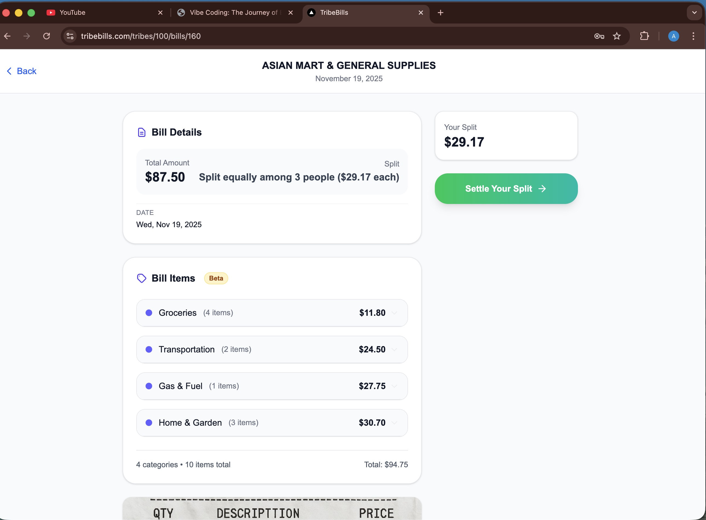
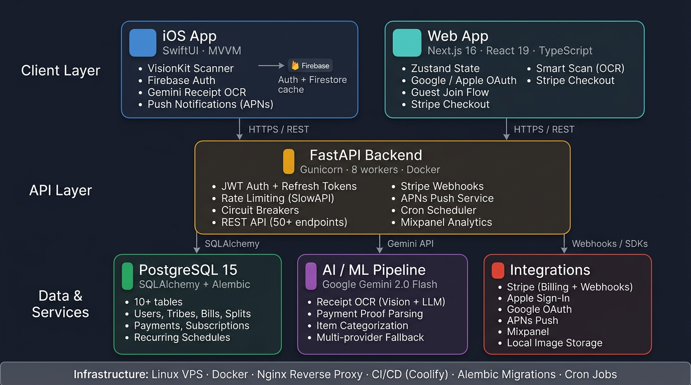

Capture
Camera or upload starts a bill from the receipt already in hand.
Product systems
A deployed AI-assisted expense product with instrumented OCR, independent circuit breakers, manual fallback, and production data-integrity repair.

The product journey
A member creates a group, shares an invite, scans or uploads a receipt, reviews the extracted items, assigns splits, and tracks settlement. Guest identity keeps joining lightweight; registration can happen later without losing history.
Receipt intelligence accelerates data entry but never owns the financial record: every item and amount remains editable before the bill is confirmed.
Built independently across backend, web, and iOS. Deployed and actively dogfooded; go-to-market work is currently paused.
The native flow keeps receipt extraction visible and reviewable before a split is committed.
Designed for degraded conditions
TribeBills coordinates money; model output remains editable and the product does not move funds between members.
Camera or upload starts a bill from the receipt already in hand.
OCR and categorization propose editable items, totals, and categories.
Independent circuit breakers and manual entry keep bill creation available.
iOS can queue bill creation offline and reconcile when connectivity returns.
Shared product architecture

The web settlement surface is shown separately from the native receipt flow so each medium has a clear role.
| Area | Implementation | Consequence |
|---|---|---|
| AI integration | Receipt extraction, item categorization, manual fallback, circuit breaker design. | A model failure does not prevent a member from creating a bill manually. |
| Backend maturity | 108 routes, 12 Alembic migrations, rate limits, Docker, and cron-secured recurring processing. | Business rules remain consistent across the web and iOS clients. |
| Product detail | Guest identity, promotion path, account deletion, archive flows, legal pages, CSV export. | Groups can begin with low friction without losing history when a guest later registers. |
| Testing | 74 web test files with 722 test cases, plus backend contract and integration tests. | Web flows and backend contracts are covered more deeply than the current native client. |

Architecture evolution
The earliest client used Firebase and Firestore to reach a working product quickly. As relational queries, payment histories, recurring schedules, and shared contracts became more important, I moved the domain to a Postgres-backed API while retaining Firebase authentication where it remained useful.
The current system contains 108 backend routes, 12 database migrations, roughly 722 web tests, and 94 Swift source files.
Production learning
A data-integrity repair reconciled 34 bills and 57 splits while preserving the underlying history. That work led to tighter invariants around bill totals, participant splits, and migration behavior.
A separate production failure showed that analytics work could throw after a successful payment update and surface a 500 response. Analytics was moved behind a safe wrapper, given its own circuit breaker, and covered by regression tests so an observability dependency cannot break a critical transaction.
Mixpanel records OCR use, processing time, categorization use, and suggestion volume. A new offline harness scores merchant, total, tax, item, category, latency, malformed-output, and run-consistency metrics from labelled receipts. The real frozen dataset is not populated yet, so no accuracy or adoption claim is made.